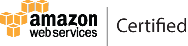

Shyamal Punekar
Welcome to Shyamal's Portfolio...
Excited to develop world changing technologies
Background
Automation Engineer, involved in website testing Manual and Automation
Certifications
Github repositories
- https://github.com/shyamalpunekar/my-first-webpage: Describes the understanding of html and css styles
- https://github.com/shyamalpunekar/deacon-blog : This project includes html, css concepts alongwith README creation
- https://github.com/shyamalpunekar/green-marriot-island Resort webpage with the use of git branching and merging concepts
- https://github.com/shyamalpunekar/animal-shelter: Explored with more css styles like padding,media query and responsive design framework
- https://github.com/shyamalpunekar/wikipedia: Developed wikipedia page by using bootsrap